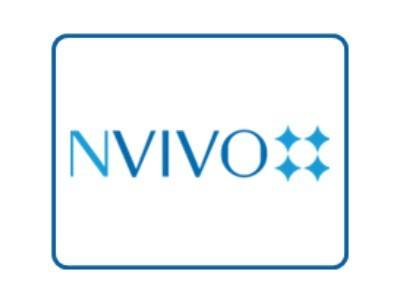

Our world is exploding with data – text, videos, social media and more. Making sense of it without the right research tools is like looking for a needle in a haystack. See the big picture fast with NVivo 12 – the most powerful software for gaining richer insights from qualitative and mixed-methods data.

NVivo is the most used qualitative and mixed-methods data analysis software tool by academics and professional researchers globally. NVivo is ideal for complex research projects, whether you’re working solo or in a team. Enrich your understanding with NVivo.
NVivo could be used to support research getting published, PhD research, not-for-profit support, public health studies, research grant funding, and finding the best minds.
- For academics
Whether you’re working on a dissertation, publication, funded research or teaching the next generation of experts, you’ll create positive change with NVivo – powerful software that helps you deliver the most robust, defensible findings.
Lecturers, professors, students and researchers all over the world use NVivo to organize, manage and analyze their qualitative data from text, images, literature, video, surveys, social media and more.
By using NVivo to support your research project you can:
- Never forget another 'aha' moment by keeping a research journal in the software with links to those key points in the data
- Organize data your way either working from a structured framework of codes or letting codes emerge through reading and interpreting the data
- Review your work as you go using colourful coding stripes that display alongside your data
- Capture and analyze social media data from Twitter, Facebook and YouTube
- Make sense of survey data fast by automatically coding open ended questions and using matrices to compare the answers from different types of respondents
- Visualize and share findings with your supervisor, students or conference delegates
- Interrogate your data with queries to search for text, analyze word frequency and cross tabulate data
- Manage bibliographic data from EndNote, Zotero, RefWorks and Mendeley
- Export summary data to Excel and .csv formats, for exchange with quantitative analysis tools such as IBM SPSS StatisticsCollect data on just about any mobile device using Evernote or OneNote, and import directly in NVivo for analysis
- Share and report your findings with exportable images, diagrams, tables and documents
- For researchers
Human resources, marketing and product managers, government researchers, customer experience researchers, lawyers, and analysts all use NVivo to manage and analyze qualitative data. From measuring customer satisfaction to understanding staff engagement, NVivo will help you deliver deeper insights.
Organize and analyze qualitative data like customer and employee feedback, social media comments and competitor information to maximize profitability, save time and gain a competitive edge.
By using NVivo to support your research project you can:
- Make sense of survey data fast by automatically coding open ended questions and using matrices to compare the answers of different types of respondents
- Understand key concepts and sentiment in large volumes of text within minutes
- Quickly discover key topics and themes using text search and word frequency queries
- Use simple visualizations to communicate like Word Clouds
- Visually represent project data with charts to compare the key themes
- Review your work as you go using colourful coding stripes
- Export summary data for analysis with tools such as IBM SPSS Statistics
- Capture and analyze social media data like Twitter, Facebook and YouTube
- Interrogate your data using queries to search for text, word frequency or to cross tabulate data
- Teach NVivo how to categorize your data for you by manually coding a sample of your text then let NVivo do the rest
- Analyze social networks to discover influencers and opinion leaders
- Work in a research team in a collaborative environment
Here are some tutorials for you!